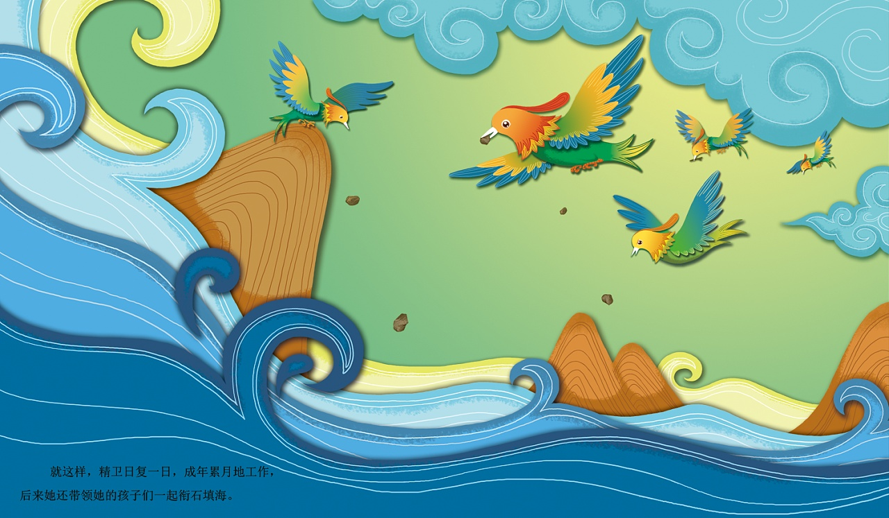

精卫填海是《 山海经 》记叙的一则故事，说的是中国 上古 时期一种叫精卫的鸟努力填平大海。 《山海经》记述有一种鸟。 它的名字叫精卫。 精卫原来是 炎帝 宠爱的女儿，有一天她去东海玩，可是突然风暴袭来，她死了。 女娃变成了鸟，名字就叫作“精卫鸟”。 精卫鸟去西山衔来石子儿和树枝，一次又一次投到大海里，想要把东海填平。 晋代 诗人 陶渊明 写诗说：“精卫衔微木，将以填沧海”。 后来人们常用“精卫填海”这句 成语 ，比喻按既定的目标坚毅不拔地奋斗到底。 原文：又北二百里，曰发鸠之山，其上多柘木，有鸟焉，其状如乌，纹首，白喙，赤足，名曰“精卫”，其鸣自詨。 是炎帝之少女，名曰女娃。 女娃游于东海，溺而不返，故为精卫，常衔西山之木石，以堙于东海。 漳水出焉，东流注于河。
